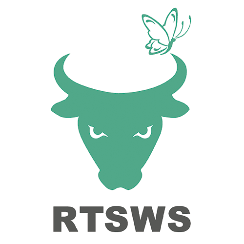
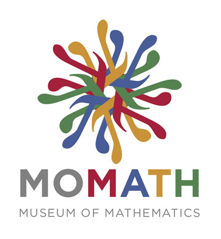
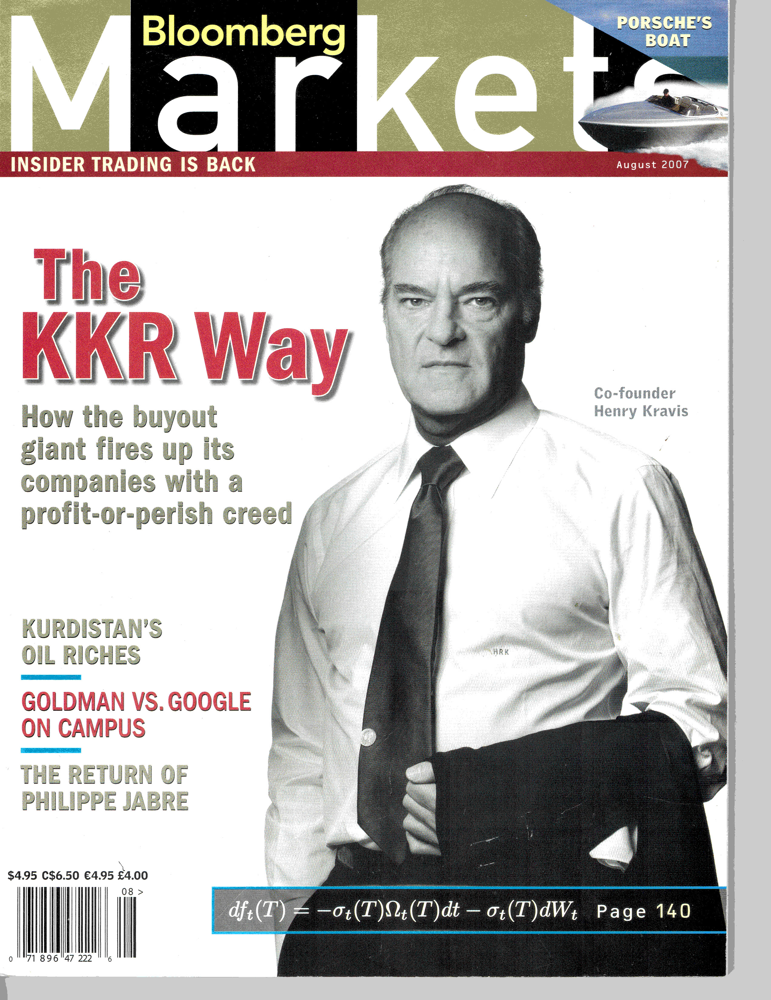

Hello and Welcome!
Currently, I am a private investor located in New York City and an angel investor in several startups including:
- Tifin AI for wealth management.
- Market Reader Understand markets in real time.
- Stronghold Payment and financial infrastructure for all.
- Launchpoint Advanced air mobility.
Additionally, I serve on the board of ScotiaBank (U.S.) and do consulting for an enterprise data science firm, Posit PBC. I occasionally publish recreational data science projects at outsiderdata.blog. I am a member of the Economic Club of New York.
I only consider investment introductions from my established network. Unsolicited inquiries will be politely ignored.
I am the former Chairman, CEO and President of OppenheimerFunds. After joining the firm in 1986, I served as an analyst, portfolio manager and Chief Investment Officer. I was named President in 2013, CEO in 2014, and, in 2015, Chairman of the firm with $250 billion under management. I stepped down when the firm was sold to Invesco.
I spent most of my career as a global macro fixed-income investor at OppenheimerFunds, creating several mutual funds that grew to over US$20bn in assets. These included the multi-sector “Strategic Income Fund” and the “International Bond Fund.” At various times I headed the Government, High-Yield and International Bond teams. I was nominated for Morningstar’s Fixed Income Manager of the Year in 2007. As CIO and CEO, I led the effort to acquire several companies to expand into energy and “smart beta” spaces.
I am passionate about advancing financial and mathematical literacy, which are essential elements of the next generation’s success.
I serve on the board of “Rock the Street, Wall Street” which brings financial literacy programs into high school classrooms, mostly in under-resourced communities, to encourage girls to become interested in finance. We need more diversity in finance.

I am a trustee of my Alma Mater, Denison University. Quite coincidentally, my interest in data science has grown along with Denison’s. The college already had strong computer science and applied mathematics programs. A few years ago they launched a Data Analytics major and it has been one of fastest growing disciplines in the school’s history. Data science skills in a liberal arts context give kids a powerful tool set that set them up well for career success. Check it out!
I am a supporter and the former board chair of the National Museum of Mathematics, MoMath.org Visit the museum when you are in NYC. We are making math cool!

Finally, I support WFMU. Freeform, listener-supported, radio. Want to support the station, too?
I am grateful to have received a couple honoraria. In 2015, I was named “Man of the Year” by The YWCA of New York City and, in 2017, was honored to receive the “Corporate Trailblazer” award by Black Women of Influence for my efforts in promoting STEM education among girls and minorities. I should note I consider myself fairly conservative. I prefer market-oriented solutions to social problems, not government diktats. That said, structural racism is real and only by recognizing it can we work to eliminate it.
I hold an M.B.A. in finance from Columbia Business School and a B.A. in Russian language and Slavic Studies from Denison University.
Art is one of America’s least quoted pundits on financial markets. He is a frequent guest speaker at the local middle school career day and hopes to be invited to speak on matters of import by the local Kiwanis, Rotary or Odd Fellows chapter soon. Judging the by accuracy of his prognostications below, that isn’t likely.
National Museum of Mathematics Gala: Numeracy Matters
07/30/2018
Art’s Last Great Idea

03/8/2018
Art’s Alma Mater Flatters A New Donor

4/17/2017
Art Gets Grilled About Puerto Rico
11/10/2016
New York Times Dealbook Conference
01/17/2017
American Museum of Finance Education Series
4/30/13
Interview with NBR at the Milken Conference
10/20/2008
Art talks with Erin Burnett about emerging market debt on CNBC’s “Street Signs”
1/8/2008
Smart Money Magazine Proves A Contrary Indicator

The Only Bond Fund You’ll Ever Need?
1/8/2008
Wall Street Journal Profile

Secrets from the Brewer/Bond Manager
11/15/2007
Art Discusses Currencies On Bloomberg Asia TV
11/1/2007
Art on CNBC’s “Closing Bell” with Maria Bartiromo
9/10/2007
Art Appears On CNBC’s “Power Lunch” To Talk About European Credit Spreads
8/1/2007
Art Talks Like a “Bull Market Genius”

7/5/2007
Steinmetz Talks Emerging Market Debt On CNBC
9/8/1995